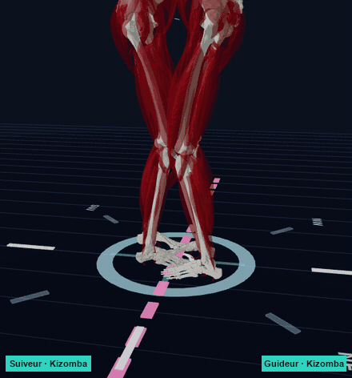
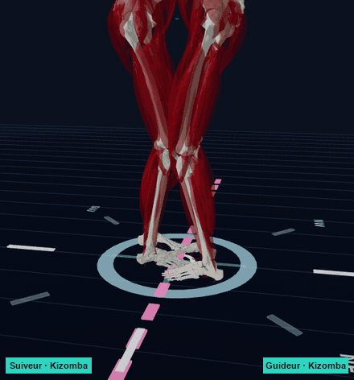
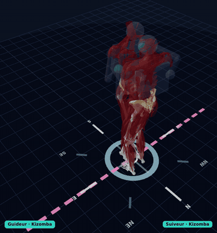
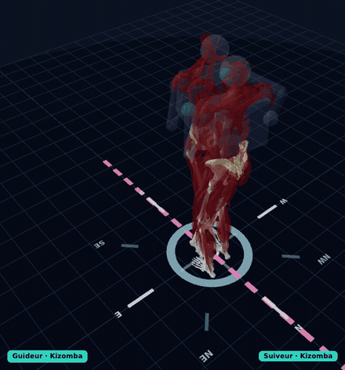
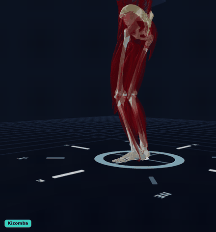
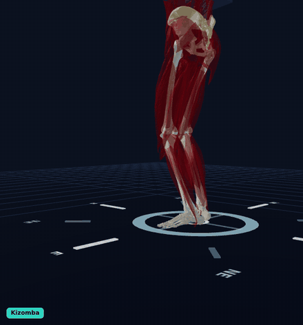

Comparateur 3D des styles de danse · chantier #148
Élections de variantes
Premier tour, 21 novembre 2026. Trois questions de mouvement, chacune filmée dans ses deux versions. Regarde les films, coche ta réponse, ajoute un commentaire si tu veux. Rien n'est implémenté avant ton vote, et ton commentaire sera recopié mot pour mot dans l'issue.
Ida e volta en paire : quel pied bouge chez le suiveur ?
Le couple est en quinconce. Aux temps 1 et 2, le leader avance son pied gauche puis le ramène. Le suiveur recule en même temps : avec le pied opposé (son droit), ou avec le même pied (son gauche) ?
Film : 8 temps, kizomba, 90 bpm, avec les muscles, en boucle. Vue de côté : le suiveur est à gauche, le leader (« Guideur ») à droite.
Temps
1 – 2
3 – 4
5 – 6
7 – 8
Leader
gauche devant
gauche derrière
droit devant
droit derrière
Suiveur, version A
droit derrière
droit devant
gauche derrière
gauche devant
Suiveur, version B
gauche derrière
gauche devant
droit derrière
droit devant

Aaujourd'hui
Pied opposé
Quand le leader avance le gauche, le suiveur recule le droit. Chaque pas de 18 cm aller, puis retour.
Semelles des deux danseurs : aucun recouvrement (400 instants mesurés sur les 8 temps)
Os des jambes : aucun croisement entre les danseurs (64 poses)

Bvariante
Même pied
Quand le leader avance le gauche, le suiveur recule le gauche. Mêmes pas de 18 cm.
Semelles des deux danseurs : aucun recouvrement (400 instants)
Os des jambes : 19 poses sur 64 où une jambe du leader traverse une jambe du suiveur (cuisses et tibias)
Prototype brut : seul le pied du suiveur change. Les bassins et les genoux gardent leurs réglages actuels.
Sortie garçon, vue de dessus. Les deux films montrent exactement le même mouvement, où le couple avance d'environ 70 cm : seule la ligne rose tracée au sol change de direction.
Film : 5 temps, kizomba, 90 bpm, avec les muscles, en boucle. Le leader est au premier plan, de dos.

Aaujourd'hui
Perpendiculaire aux bustes
La ligne passe entre les deux danseurs, parallèle à leurs épaules au départ.
Le couple se déplace en travers de la ligne
Aucune autre mesure : le mouvement est identique, seul le tracé change

Bvariante
Dans l'axe des bustes
La ligne traverse les deux danseurs, de l'un à l'autre, dans la direction où ils se font face au départ.
Le couple se déplace le long de la ligne
Aucune autre mesure : le mouvement est identique, seul le tracé change
Un danseur seul marche en cercle (corridinho, temps 9 à 16). Chaque pied fait un pas d'environ 47 cm tous les 2 temps. Regarde le pied qui avance : reste-t-il à plat, ou se déroule-t-il du talon à la pointe ?
Film : 8 temps, kizomba, 90 bpm, avec les muscles, en boucle. Cadré sur les jambes.

Aaujourd'hui
À plat
Le pied se soulève et se repose d'un bloc, semelle toujours parallèle au sol.
Inclinaison du pied : 0° pendant les 8 temps
Aucun os sous le sol

Bvariante
Déroulée
Comme dans les figures : le talon se lève d'abord, le pied passe, puis il se pose par le talon.
Talon levé jusqu'à 20° au départ du pas, pointe relevée jusqu'à 13° à la pose
Les deux pieds sont à plat ensemble 46 % du temps
Aucun os sous le sol
Élire B demande de modifier la règle « pieds plats » et le contrat de l'oracle (phase 18).
Les trois pistes relevées dans l'issue changent la géométrie du couple, pas seulement un pas : il faut régler à nouveau les bassins et les pas suivants de la figure. L'essai du 20 novembre (pas de 20 cm de chaque côté) donnait 123 chevauchements de pieds et 15 croisements d'os ; le filmer tel quel aurait faussé le vote.
C'est un seuil, donc un nombre. Pour le choisir à l'œil il faut la même figure filmée à plusieurs distances, ce qui demande de régler à nouveau chaque figure. Pas de chiffre à choisir à l'aveugle.